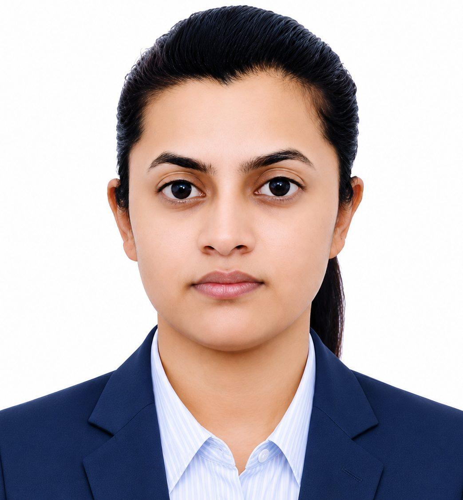

01
Materials synthesis & design
Developing functional materials through controlled synthesis routes and investigating how composition and processing shape material structure and performance.
CHEMICAL ENGINEERING · MATERIALS RESEARCH
I am Richa Ranjan, a Chemical Engineer and researcher interested in materials synthesis, design and characterization, with a focus on environmental applications and pollutant removal.
Research begins with a question:
01 / ABOUT
I am a Chemical Engineer and researcher affiliated with the Department of Chemical Engineering at the Indian Institute of Technology (IIT) Ropar. My research focuses on engineered adsorbents for the removal of industrial dyes and pharmaceutical contaminants from wastewater.
I am committed to collaborative, intellectually stimulating work that encourages continuous learning, knowledge sharing, and professional growth. I approach complex research challenges with patience, perseverance, critical thinking, and a focus on developing meaningful and innovative solutions.
My work combines adsorbent synthesis, electrospinning, cellulose aerogel development, magnetic nanofibrous materials, and material and surface characterization with adsorption performance analysis.
Connect about research collaboration →02 / RESEARCH INTERESTS
Building an understanding of how materials are made, what defines their properties, and how they perform.
Developing functional materials through controlled synthesis routes and investigating how composition and processing shape material structure and performance.
Connecting morphology, porosity, surface chemistry, crystallinity, and surface charge with observed material behaviour.
Studying adsorption kinetics, equilibrium isotherms, and possible interactions at the material–pollutant interface.
Exploring adsorbent materials for removing emerging contaminants and dyes from water, with attention to treatment performance and practical potential.
03 / PUBLICATIONS
Journal articles and manuscripts in materials design, adsorption, and sustainable wastewater treatment.
Journal of Hazardous Materials Advances, 21 (2026), 101015.
Read article / DOI ↗Results in Engineering, 29 (2026), 109799. DOI: 10.1016/j.rineng.2026.109799.
Read article / DOI ↗Results in Chemistry, Volume 31, November 2026, Article 103918. DOI: 10.1016/j.rechem.2026.103918.
Read article / DOI ↗ Open on ScienceDirect ↗Visit Google Scholar for the author profile and available citation information.
04 / TECHNICAL SKILLS
MATLAB · Python · COMSOL
FE-SEM · Electrospinner (E-spin Super ES-1) · Zetasizer Nano ZSP (DLS) · Optical tensiometer · UV–Vis spectrophotometer · Rheometer (Anton Paar MCR702)
OriginPro 8.5 · LaTeX · MS Office · Visio · Code Composer Studio · MathType · ImageJ · AutoCAD · CATIA V5R19
Adsorbent synthesis · Electrospinning · Cellulose aerogels · Magnetic nanofibrous adsorbents · Adsorption kinetics and isotherms · Material and surface characterization

Professional Picture
05 / PERSONAL PROFILE
My journey in chemical engineering has been shaped by curiosity: a desire to understand how materials are made, why they behave the way they do, and how careful experimentation can turn questions into useful knowledge. Research has taught me to value patience, persistence, and the small discoveries that emerge when we look closely at a problem.
I enjoy continuous learning and exploring ideas beyond my immediate field. I believe that new places, conversations, and perspectives can broaden the way we think, both as researchers and as people. I value collaborative environments where knowledge is shared openly and different experiences help shape better questions.
Outside the laboratory, I enjoy travelling and discovering new places. I am still adding to this personal story, and this section can grow to include other interests, experiences, and moments that have influenced my journey.
06 / CONFERENCES & PROFESSIONAL DEVELOPMENT
Rencontres du Vietnam on Soft Matter, Fluids, Interfaces, ICISE, Quy Nhon, Vietnam, June 9–15, 2024. With Manigandan Sabapathy and Sarang P. Gumfekar.
Presented an oral research presentation.
Participated in the international workshop.
4th National Conference on Advances in Chemical Engineering and Science (ACES 2023), Department of Chemical Engineering, IISER Bhopal. Recipient of Best Presentation Award.
Instructor-led certification course conducted by iHub DivyaSampark, IIT Roorkee, in collaboration with RBPL.
2nd International Conference on Membrane Technologies for Desalination, Energy and Water Sustainability, Department of Hydrology, IIT Roorkee.
Three-day workshop organized by A2Z EduLearningHub LLP.
Poster presented at the International Symposium on Plant Biotechnology Towards Improving Agri-Food Industry and Healthcare Products (ISPB-2021), BIT Mesra, held virtually.
07 / RESEARCH INTERESTS & PERSONAL STRENGTHS
Designing sustainable, bio-based and functional materials that transform environmental challenges into opportunities for water remediation.
Connecting morphology, surface chemistry and material structure to adsorption mechanisms, kinetics and contaminant–surface interactions.
Engineering cellulose aerogels, electrospun nanofibres and magnetic nanocomposites to target dyes and emerging pharmaceutical pollutants.
Exploring adsorption efficiency alongside material recovery, reusability and the broader demands of sustainable wastewater treatment.
Hindi · English · German
Critical thinking · Problem solving · Quick learning
08 / ACADEMIC REFERENCES
Associate Professor, Department of Chemical Engineering
Assistant Professor, Department of Chemical Engineering
Assistant Professor, Department of Chemical Engineering
GE Aerospace Research, Niskayuna, New York, USA
09 / CONTACT
Open to meaningful scientific conversations, interdisciplinary collaborations, research discussions, and suitable academic opportunities.
PROFESSIONAL CONTACT
For professional enquiries, research discussions, and collaboration opportunities.
Email rricha1994@gmail.com ↗ Google Scholar View publications ↗ ResearchGate View research profile ↗ ORCID View researcher ID ↗ LinkedIn View profile ↗ Research Lab Advanced Colloid & Interfacial Engineering Lab ↗